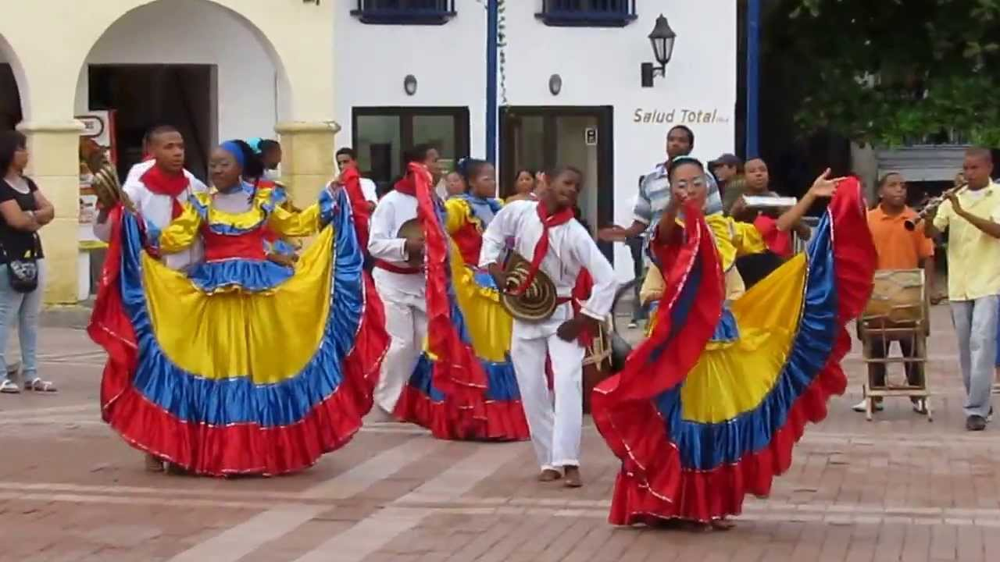

Cumbia
La Cumbia es uno de los bailes más representativos de la costa caribe colombiana, con raíces africanas, indígenas y españolas.
Joropo
El Joropo es el baile típico de los Llanos Orientales, caracterizado por su zapateo y el uso del arpa, cuatro y maracas.

Mapalé
El Mapalé es una danza afrocolombiana de la costa pacífica, conocida por sus movimientos rápidos y enérgicos.

Bambuco
El Bambuco es un baile típico de la región andina colombiana, con melodías suaves y ritmos de origen indígena.